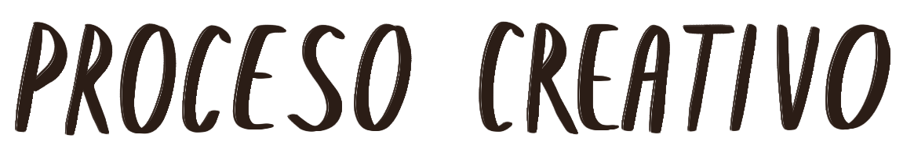
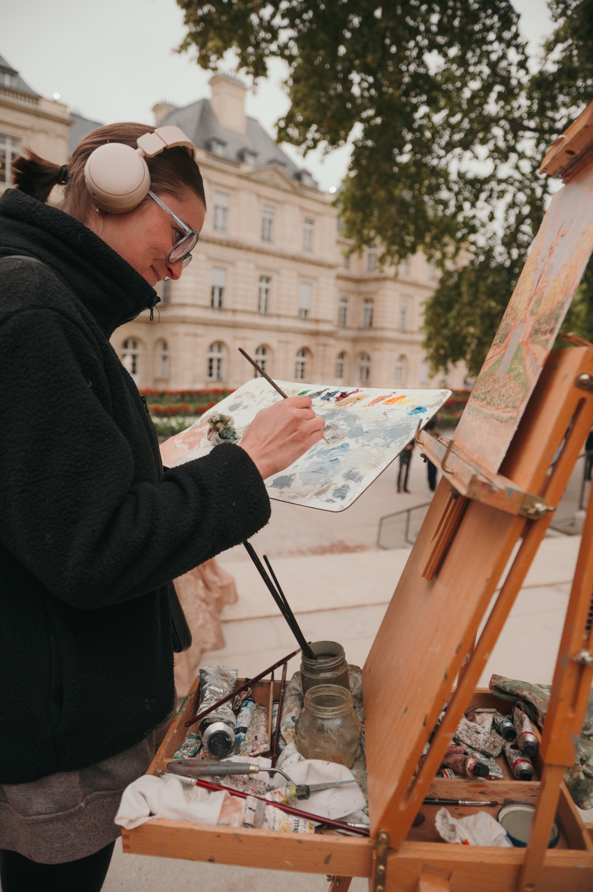
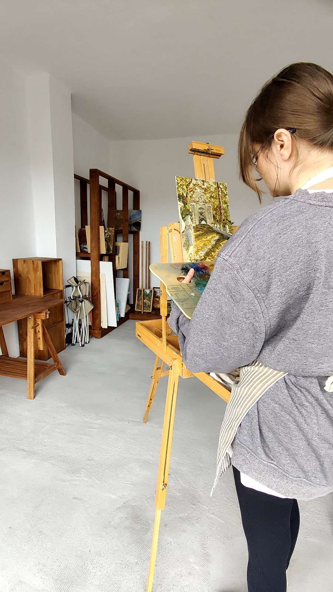

Plein Air
Mi proceso comienza fuera del taller. El trabajo al aire libre me permite captar la luz real, la atmósfera del lugar y la energía inmediata del entorno. Frente al caballete, registro los primeros trazos, el color en directo y la estructura esencial de la escena.

El estudio
De vuelta al estudio, el proceso cambia de ritmo. Es el espacio para la pausa, la reflexión y el desarrollo técnico. En el estudio retomo el trabajo iniciado en el exterior para matizar la composición, trabajar la materia y las capas con más calma, hasta encontrar el equilibrio definitivo de la pieza.